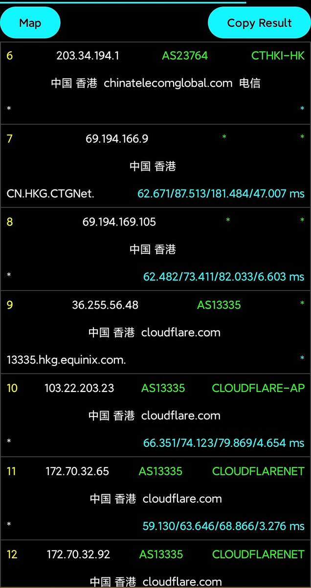
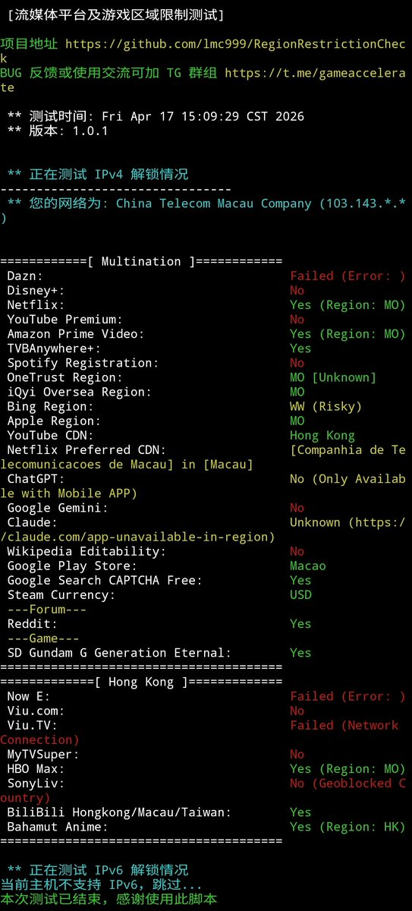
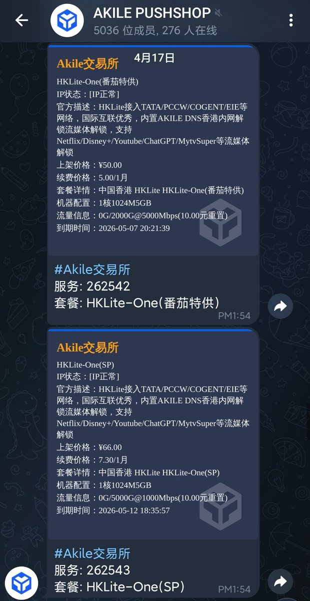

自建梯子就要买VPS，目前国内宽带业务就那三家，广电没有自己的骨干网就不提了。除了电信绕美，移动往香港，联通往日本、德国效果很不错，现在移动单宽带tb上一年大概也就几百，我们先说看线路再分享我用的那几家
买VPS时，商家会提供测试IP，如果还有looking glass还能测速、回程等，首先建议下载一个NextTraceRoute（路由追踪，图中演示的是内地CN2到香港Cloudflare）软件，测试到目标IP去程走的线路，这样你就知道是哪个环节导致的绕路
其次是IP质量，如果这个IP段有邻居滥用那会导致跳验证码频繁，除了改数据的ping0还有ippure、iplark这类的网站可以多方参考，这部分其实意义不大，我更推荐是跑一下lmc999/RegionRestrictionCheck（流媒体解锁脚本），测一下YouTube是否送中、Netflix是否支持等，只要能满足你的需求都是好鸡
顺便扯下优化线路，有些商家会标记电信CN2（或CTG）、移动CMI（或CMIN2）、联通9929（CUII），这些表示他们买了三大运营商某家（或全买）的IP传输，因为三家是互相peer的。当然市面上有移动快乐鸡、移动优化鸡，回程直接偷Lumen（前Level3），除了移动是直的，联通和电信都绕
最后说说我自己吧，我花了400在某宝整了条移动家宽，然后去Akile的拍卖蹲10元/月的鸡，他家重置流量也便宜。不过一分钱一分货，尤其是IPv6在我体验上简直不能用，可能是我本地的网络环境太糟糕。他家还有个PushShop频道会更新拍卖上架，可能买到的VPS是别人用过的N手鸡，但IP有没有被墙面板上也会有标记，这个倒是可以放心。不过我不做推荐，至于小宽带30/50/100Mbps的两位数优化线路VPS，我放晚上再说
买VPS时，商家会提供测试IP，如果还有looking glass还能测速、回程等，首先建议下载一个NextTraceRoute（路由追踪，图中演示的是内地CN2到香港Cloudflare）软件，测试到目标IP去程走的线路，这样你就知道是哪个环节导致的绕路
其次是IP质量，如果这个IP段有邻居滥用那会导致跳验证码频繁，除了改数据的ping0还有ippure、iplark这类的网站可以多方参考，这部分其实意义不大，我更推荐是跑一下lmc999/RegionRestrictionCheck（流媒体解锁脚本），测一下YouTube是否送中、Netflix是否支持等，只要能满足你的需求都是好鸡
顺便扯下优化线路，有些商家会标记电信CN2（或CTG）、移动CMI（或CMIN2）、联通9929（CUII），这些表示他们买了三大运营商某家（或全买）的IP传输，因为三家是互相peer的。当然市面上有移动快乐鸡、移动优化鸡，回程直接偷Lumen（前Level3），除了移动是直的，联通和电信都绕
最后说说我自己吧，我花了400在某宝整了条移动家宽，然后去Akile的拍卖蹲10元/月的鸡，他家重置流量也便宜。不过一分钱一分货，尤其是IPv6在我体验上简直不能用，可能是我本地的网络环境太糟糕。他家还有个PushShop频道会更新拍卖上架，可能买到的VPS是别人用过的N手鸡，但IP有没有被墙面板上也会有标记，这个倒是可以放心。不过我不做推荐，至于小宽带30/50/100Mbps的两位数优化线路VPS，我放晚上再说


